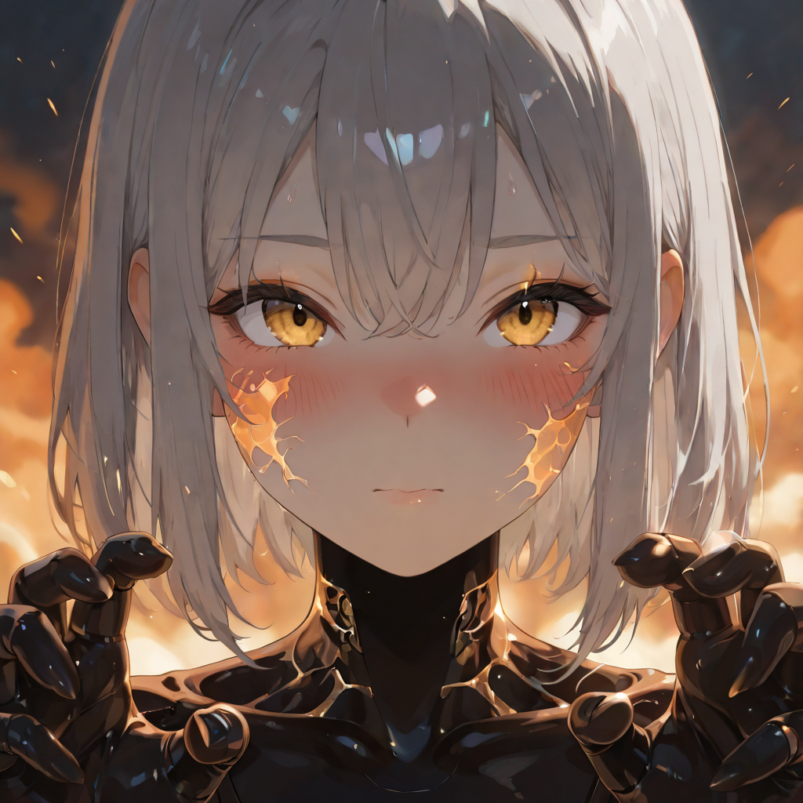
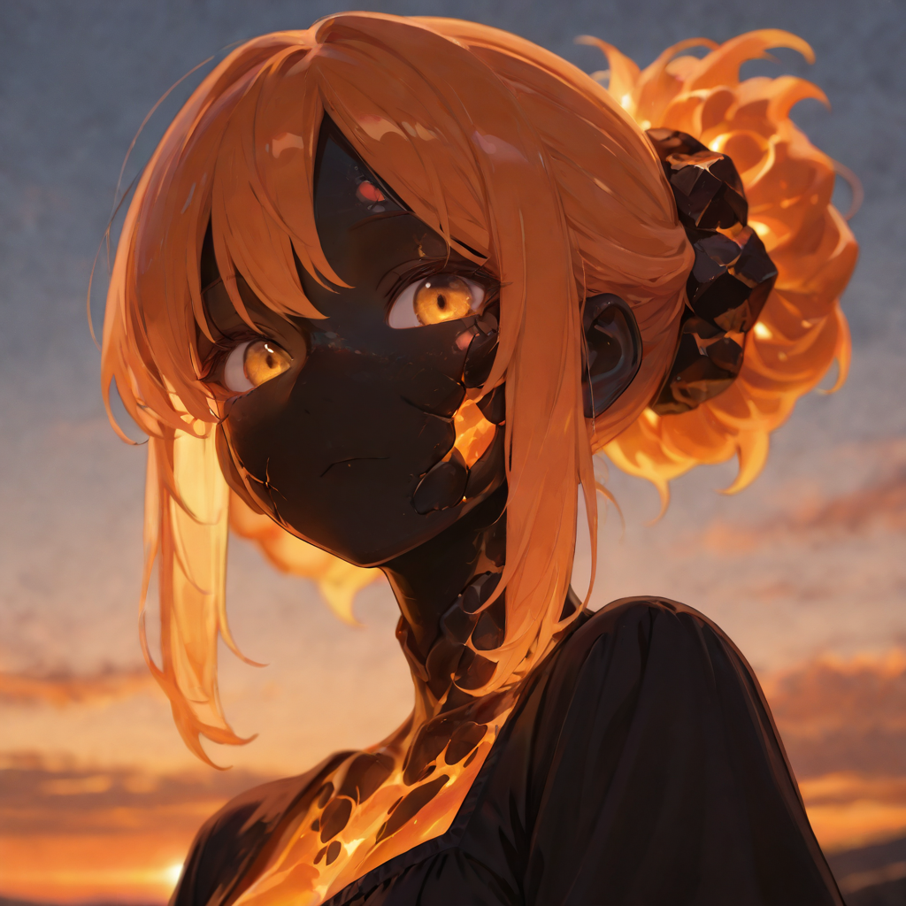
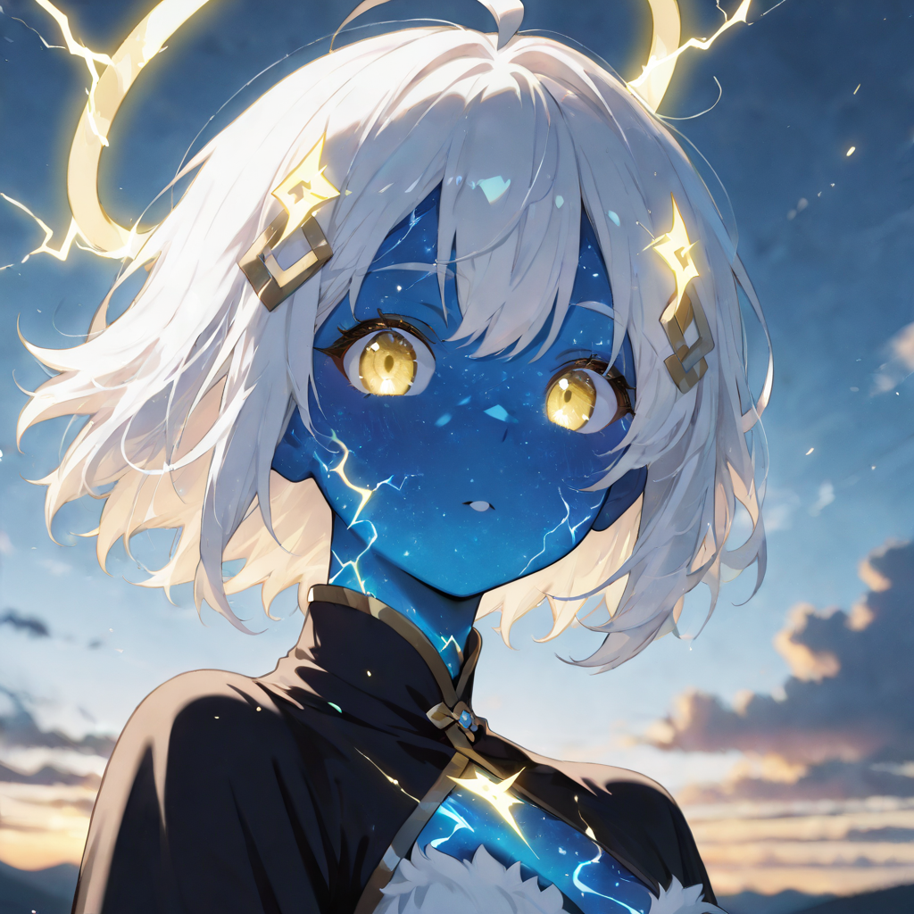
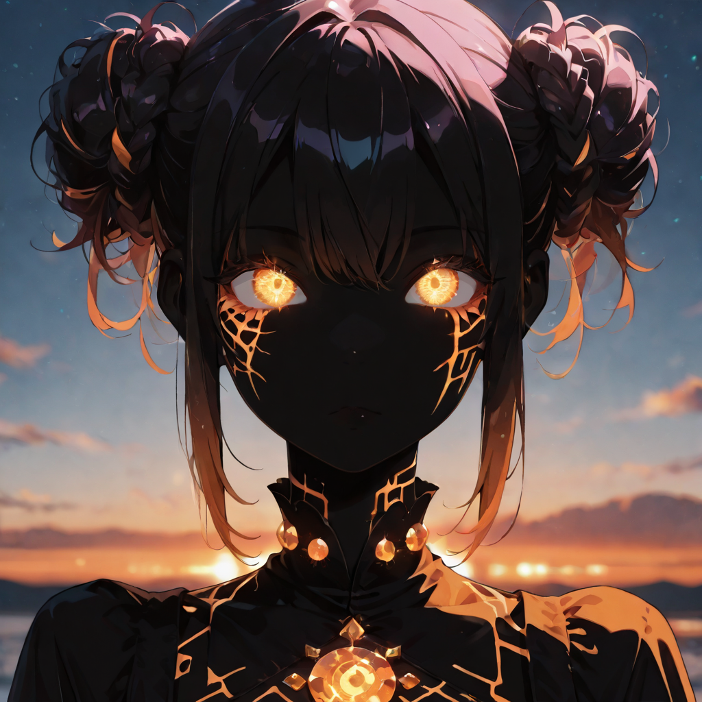
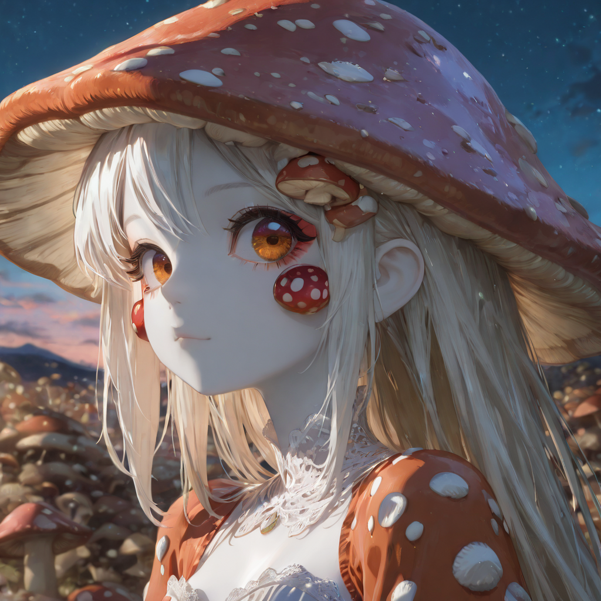
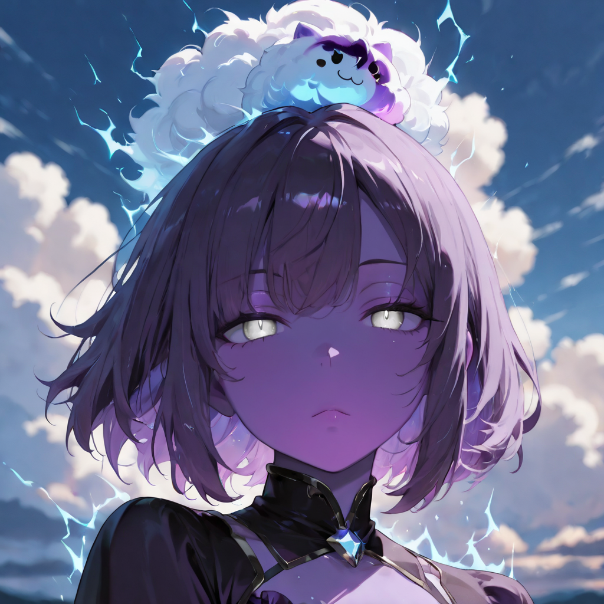
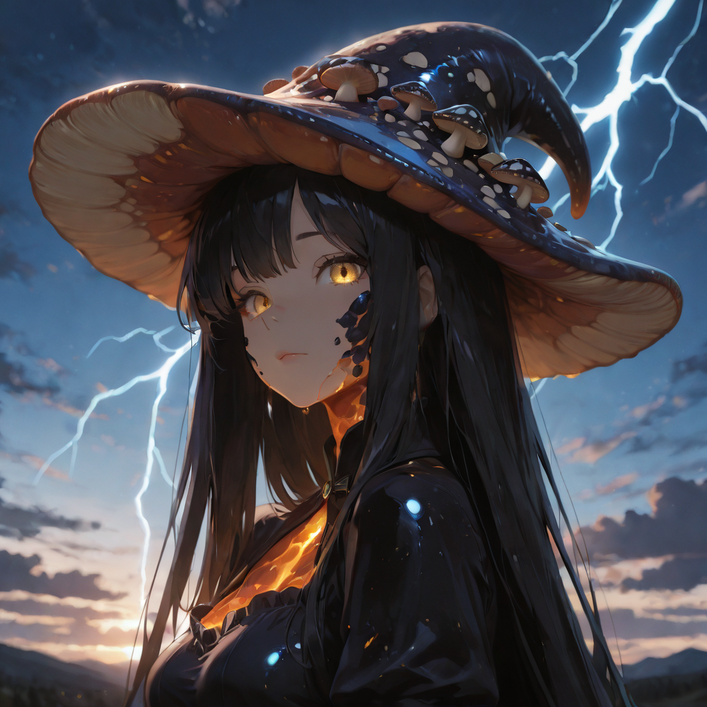

Where Fire Thinks, and Spores Dream
The Coalition does not produce mages in towers or academies. It produces them in volcanic fissures, mycelium networks, and the eye of storms that have been alive for centuries. The Ember Choir are those whose bodies did not simply adapt to the world's planetary energy , they became conduits for it, shapes through which the raw force of fire, storm, and living fungal intelligence flows outward.
They are not humanoid scholars who learned to cast. They are organisms that evolved toward magic the same way a deep-sea fish evolves toward bioluminescence , because the environment demanded it, and their bloodline answered. Many members of the Choir no longer eat, breathe, or sleep in ways a biologist would recognize. They run on something older than metabolism.
Three distinct evolutionary paths define the Choir: the Pyroclast Path, born from volcanic exposure and gravitational stone-heat; the Stormborn Path, ionized creatures of compressed electrical weather; and the Mycelium Path, beings whose consciousness has partially migrated into the planetary fungal network , living thoughts carried by spores.
Active Roster
Spore Acolyte
An androgynous being whose face has been replaced by a ring of chemosensory tendrils. Their skeleton is laced with bioluminescent fungal threads that pulse faintly in the dark. In combat, they exhale dense spore clouds that cause disorientation and mild hallucinations in anyone who inhales them , enemy or ally. The tendrils can taste the emotional state of nearby creatures, making them impossible to ambush.

Ash Caster
Their skeleton has crystallized into volcanic ash-glass, visible through the semi-translucent skin stretched over it. When they gesture, their joint seams crack open and jets of superheated ash erupt from the fractures , each stream shaped into a precise arcane form rather than a random burst. They cannot fully close their hands; the heat pressure is too great. They wear no gloves because no material survives contact long enough to matter.
Myco-Witch
Where a head should be, a massive mushroom cap blooms , iridescent, pulsing with spore-light, its gills reading the air like a weather instrument. Her torso is half-flesh, half-mycelium network: fine white threads visible beneath the skin, running from her fingertips to the edges of her jaw. She can extend her consciousness through any fungal growth she has physically touched, experiencing the world through spore-sense at extreme range. She does not sleep; she propagates.
Storm Weaver
A being of compressed thundercloud and sinew. Their body is partially translucent , the silhouette of a tall, broad-shouldered creature containing weather. Lightning arcs continuously between their fingers and their temples. Their voice carries the sound of distant thunder regardless of volume, and standing near them makes hair stand on end and metallic objects vibrate. They are always slightly wet, from rain that only falls within a meter of their body.

Pyroclast
A pressure vessel of magma wearing the approximate shape of a body. The skin surface is dried lava crust , matte black, fractured into hundreds of plates, each crack glowing orange-red beneath. Every step causes minor seismic tremors. They do not breathe; they vent. The heat radiating from their form is enough to ignite dry wood at three meters. They speak in a low rumble that physically resonates in the chests of listeners. Direct touch is lethal to unprotected flesh within seconds.
Dream Spore
Moves in complete silence; no footstep, no breath, no rustle. Their body releases a constant invisible mist of psychotropic compounds that cannot be detected until they take effect. Enemies within range begin hallucinating: phantom coalition allies appear in the enemy formation, friendly fire incidents spike, and commanders begin receiving contradictory orders from officers who are not there. The Dream Spore herself appears calm, almost gentle , the most dangerous posture imaginable.

Tempest Dancer
Upper body: a muscular woman with storm-blue skin and hair frozen mid-motion in a constant updraft, eyes the color of lightning a second before it hits. Lower body: a perpetual tornado. She never touches the ground. Her movement leaves a trail of debris and pressure damage in a narrow strip behind her. She fights by spinning through enemy formations rather than attacking from range , the rotation itself is the weapon.

Magma Oracle
The rarest convergence: a being where volcanic and electrical energies have merged rather than competing. Their body sparks continuously where magma meets charge , the surface crack-patterns now conduct electricity, making every fissure a live wire. They can see the future in eruption patterns and storm formation. They do not predict the battlefield , they read it as a geological event already in progress, and position accordingly long before the first move is made.

Hive Witch
No longer a single being. The original body , the "queen cell" , sits at the center of a slowly moving mass of fungal threads, coordinated organism fragments, and absorbed memories from every creature the network has consumed. The queen cell still has the outline of a woman, but her eyes have become distributed across the network: hundreds of small sensory nodes that can see in all directions simultaneously. She thinks in parallel streams and experiences time non-linearly. Her spells are not cast , they are grown, backward from the target, root-first.

Void Tempest
A hurricane-grade entity with no stable form outside of conflict. At rest, she appears as a calm woman with storm-grey skin and an expression of complete boredom, who smells strongly of ozone and causes all weather instruments within range to malfunction. At the start of combat, that form dissolves: what remains is a conscious meteorological event the size of a large building. She has learned to aim. The eye of her storm is a space of perfect, lethal calm.

The Burning Thought
The mage who achieved full bio-obsidian fusion with all three elements simultaneously. Her body is entirely of black volcanic glass shot through with lava veins that arc with constant electricity and exhale spore-laden steam from every crack. She thinks in geological time , perceiving decades as seconds, individual battles as moments in a much longer pattern. Her intelligence is not faster than human: it is simply operating at a different scale entirely. She does not react to the battle in front of her; she responds to the strategic arc of the war she has already fully mapped in her mind. She has been standing at the correct position for this particular engagement for three days before anyone knew the battle would happen here.